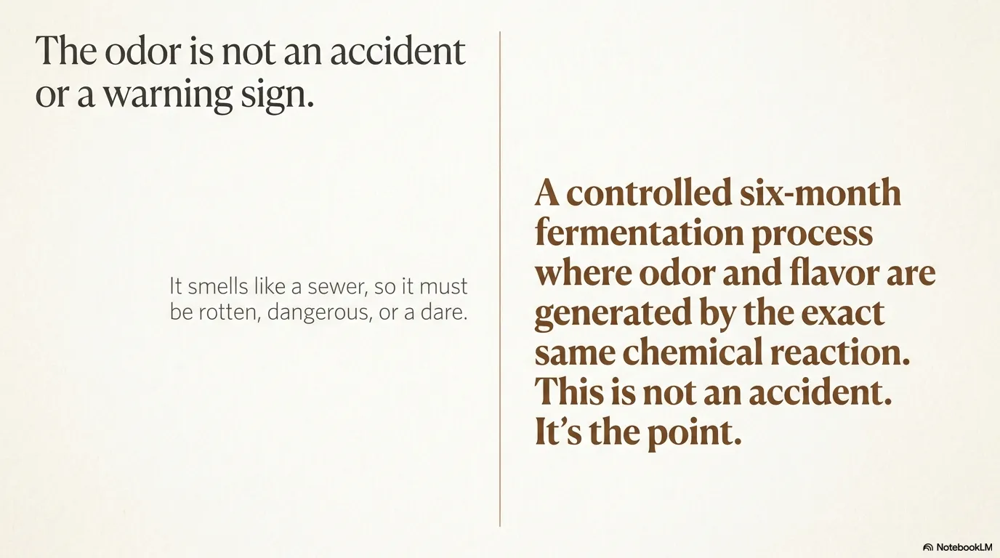
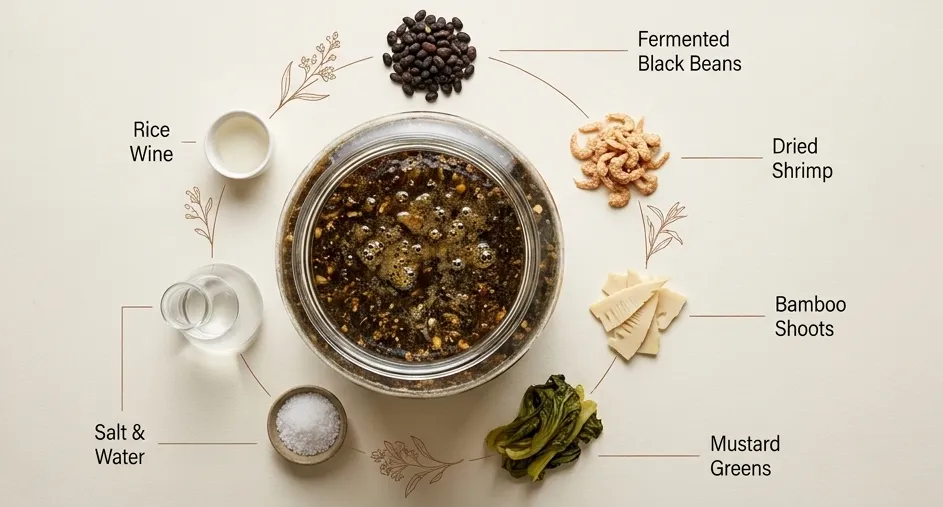
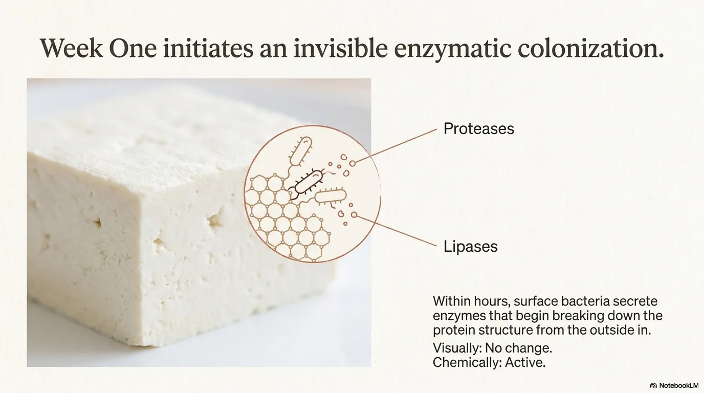
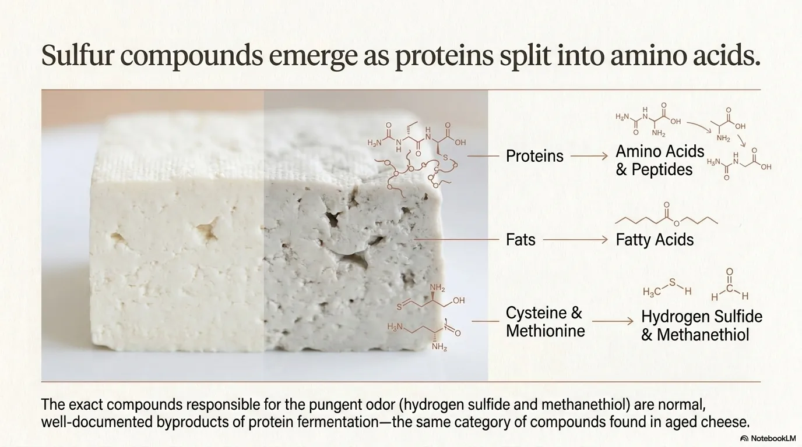
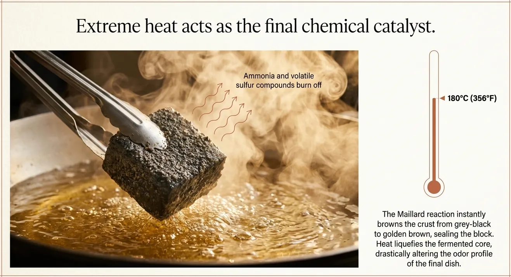
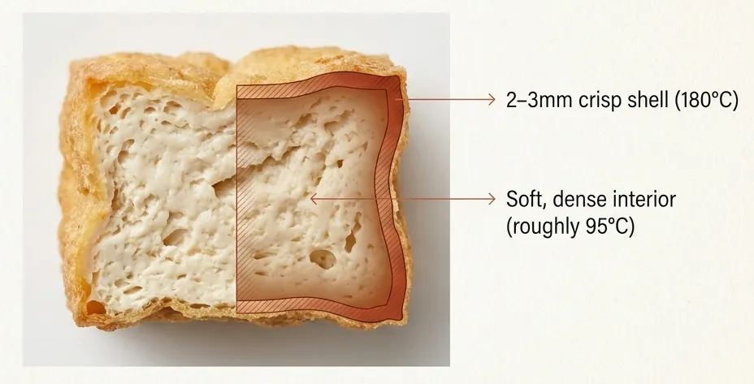
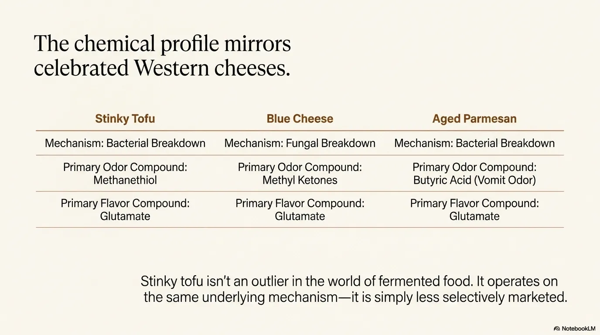
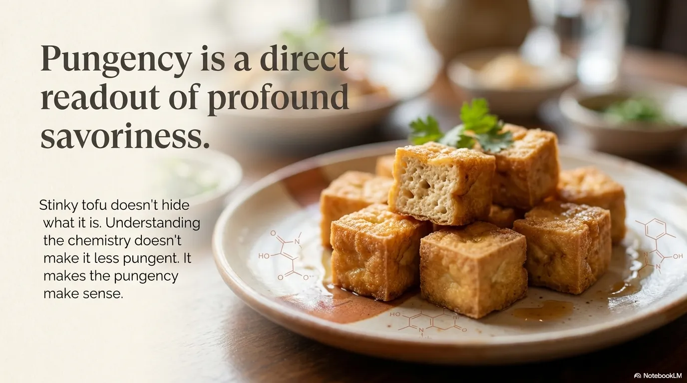

Title

Stinky Tofu: A Corrected Record
Flavor, aroma, and six months of fermentation. Not a dare. Documentation.
Visual Timeline / A Corrected Record
Stinky tofu did not choose the villain life. It was assigned one. This is the corrected record: six months of fermentation, the same chemistry as aged cheese, and frying as the final rewrite.
Flavor, aroma, and six months of fermentation. Not a dare. Documentation.

Left: smells like a sewer, must be rotten. Right: controlled six-month fermentation. The aroma and flavor share the exact same chemistry.

Rice wine, douchi (fermented black beans), dried shrimp, salt, bamboo shoots, mustard greens. Sealed six months. Not neglect—incubation.

Within hours, surface bacteria secrete protease and lipase. Visually: nothing. Chemically: everything is in motion.

Proteins become amino acids. Cysteine and methionine become hydrogen sulfide and methanethiol—the same byproducts as aged cheese.

Bacillus and Brevibacterium drive the surge. Glutamate is the umami compound in Parmesan, soy sauce, and dashi. The fermentation that makes the smell also makes the flavor.

Ammonia and volatile sulfides evaporate. At 180°C, the Maillard reaction turns the skin from grey-black to golden brown instantly. The heat liquefies the fermented core.

A 2–3mm crispy shell at 180°C. A soft, dense core at ~95°C. Inside: concentrated umami from months of enzymatic breakdown, now permanently set by the fry.

Same mechanisms: bacterial breakdown. Stinky tofu: methanethiol. Blue cheese: methyl ketones. Aged Parmesan: butyric acid. All three: glutamate. Not an outlier—just never marketed.

Stinky tofu never hid what it is. Understanding the chemistry does not make it less sharp. It makes the sharpness reasonable.
Read the full science